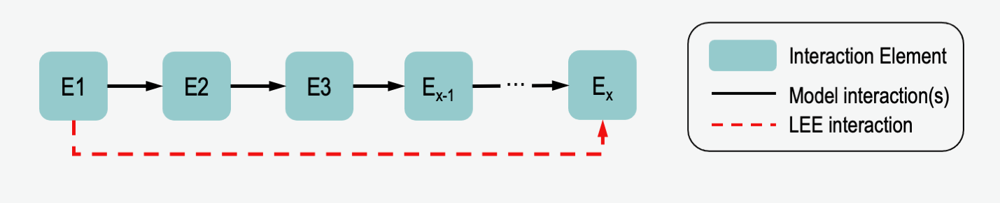

Network Functions (VIOLIN.network)¶
This page details how paths are defined and found in the model in VIOLIN. Because of the compact nature of the BioRECIPES model format, the model must be converted into a node-edge list for use with the NetworkX Python package.
One special feature of VIOLIN is its ability to compare interactions from machine reading output to paths that exist in the model. For two nodes, E1 and Ex, an LEE may exist with E1 regulating Ex. If in the model there is a path of multiple interactions where E1 regulates E2 which regulates E3 etc. to Ex, VIOLIN can identify this, and compare the LEE to this whole path. And indirect LEE may be a weak corroboration to the model interaction, or a direct LEE may be a specification, identifying a more direct relationship between 2 nodes than is given in the model. This functionality reduces the number of false extensions.
Functions¶
- VIOLIN.network.node_edge_list(model_df)[source]¶
This function converts the model from the BioRECIPES format into a node-edge list for use with NetworkX
- Parameters
model_df (pd.DataFrame) – The model dataframe, must be in BioRECIPES format
- Returns
node_edge_list – A directed graph representation of the model
- Return type
nx.DiGraph
- VIOLIN.network.path_finding(regulator, regulated, sign, model_df, graph, kind_values, reading_cxn_type, reading_atts, attributes)[source]¶
This function searches for a path between the reading regulator and regulated in the model, and calculates the kind score based on the results
- Parameters
regulator (str) – Element variable name of the regulator node
regulated (str) – Element variable name of the regulated node
sign (str) – Sign of regulated node
model_df (pd.DataFrame) – Model dataframe
graph (nx.DiGraph) – Model edgelist to create network for finding paths between elements
kind_values (dict) – Dictionary containing the numerical values for the Kind Score classifications
reading_cxn_type (str) – Connection Type of interaction from reading - ‘i’ for indirect, ‘d’ for direct
- Returns
kind – Kind Score value for the interaction
- Return type
int
Usage¶
Use of the path_finding function in the scoring.kind_score() module:
#If model does not contain interaction - check for path
else:
kinds.append(path_finding(model_df.loc[s_idx,'Variable'],model_df.loc[t_idx,'Variable'],
reg_sign,model_df,graph,kind_values,lee_cxn_type,reading_atts,attributes))